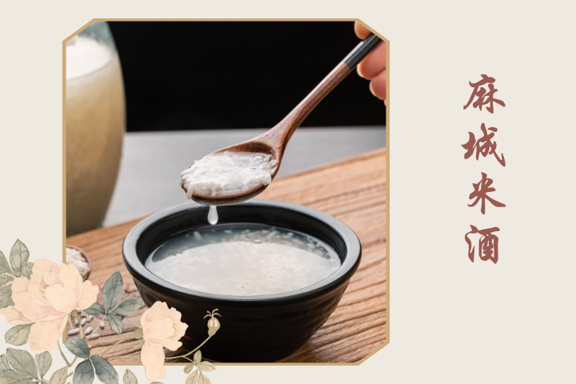

在湖北省麻城市木子店镇，一坛坛老米酒、一盘盘致富棋，以及一个振兴梦正在翻开新的篇章。作为一项非物质文化遗产，"东山老米酒"以其独特的工艺和口感，在当地享有盛誉。麻城市木子店镇将"东山老米酒"作为产业振兴的重点项目，加大了对米酒产业的扶持力度。通过政府引导和资金支持，当地的米酒生产得到了技术升级和设备更新。同时，还建立了米酒产业协会，推动企业之间的合作与交流。这些举措为当地的非遗产业注入了新的活力，也为减贫致富提供了新的机遇。
Copyright © 2023遗路生花小组 All Rights Reserved.
联系我们
武汉大学新闻与传播学院
邮政编码 430072
电话 027-68754235C